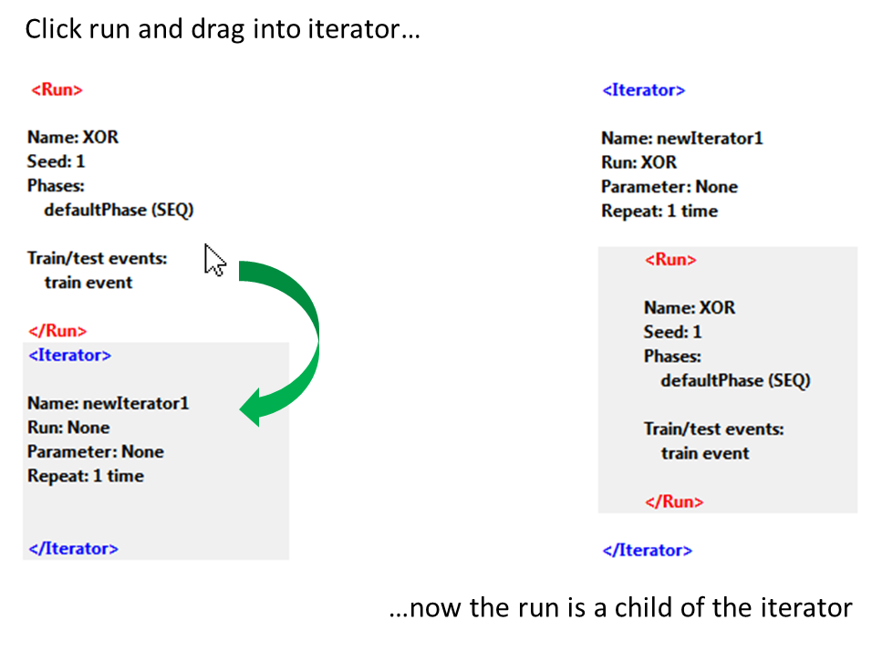
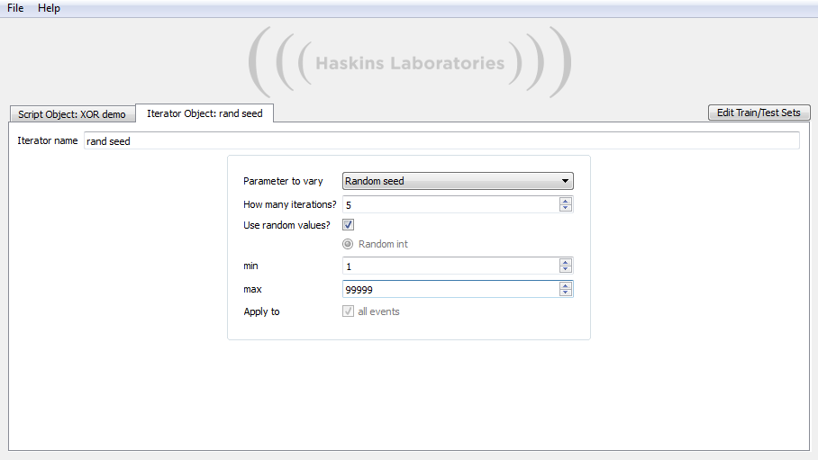

You
can make any other changes that you like. Most of these can be
overriden by the events that use them, and many can be overriden by
using an iterator to explore different values. See the main
documentation for more advanced usage guidelines.
To
navigate back to the Event tab, click the Script Object tab on the far
left, and follow the "trail" back to the event (ie., open the run, and
access the event from the "Events" sub-tab of the run).
When you return to the "Event Properties" tab, you will notice that our event has already been linked to the new training set.
Step 9: Include groups and connections in eventMikeNet
is designed to allow sub-networks of large models to be trained
independently. This flexibility is built-in to the GUI: a training or
test event can be carried out on a subnetwork of your choosing. In this
example, we will not use this functionality because we only have three
groups (see Triangle Model Tutorial for a more complex case). However,
we will need to manually tell our event to include ALL groups and
connections. If you happen to omit this step, the GUI will remind you
before trying to run the script.
Go to the "Isolate Network Components" sub-tab. It will look like this.
Notice
the parallel between this and the "Groups and Connections" adjacency
matrix from the Run Object tab. This matrix, however, cannot be edited
in the same way. It merely reflects the network structure of the run.
In other words, it provides you with a static version of the matrix
containing all
available
groups and connections. By default, none of the components are included
in the event. Toggling whether or not a component is included is as
easy as clicking that component.
Included components display as light blue. Click on all groups and connections, and you will see this.

Connections from the Bias to any other group are automatically included if they exist.
At this point, it is a good idea to make sure the work is saved (go to File->Save Script or use the equivalent of Ctrl+S).
If you switch back to the Script Object tab, you should see the following.

You can train a single run at this stage by pressing "Start Script" (make sure your preferences are set up first!).
If you want to use iteration, read on.
Step 10: Create an iteratorAdding
an iterator is done in the same way as adding a run. Click "Add
Iterator", and the new iterator will show up at the bottom of the
script timeline.
At
this point, the iterator is not connected to the run in any way. Think
of the iterator as being a container. We want the run to be inside the
container so that anything defined on the iterator is automatically
defined for the run. The method for adding the run to the iterator is
to simply click the run in the timeline and drag it inside of the
iterator.

Step 11: Edit the iterator propertiesJust like with events, you can assign a name to an iterator. Doing so is not necessary, and you can always use the default name.
Select
"Random seed" from the dropdown menu of parameters. The number of
iterations can be set to any natural number; here we have selected to
do 5 runs. If you elect to use random values, as in the following
example screenshot, then you may choose a range for the random values.
Otherwise, you must specify a starting value and a delta value for each
iteration.

Step 12: Run the scriptClick
"Start Script" on the Script Object tab. The GUI will check for blatant
inconsistencies and errors (for instance, if the example file path
cannot be resolved). It will report errors if found, and the script
will not continue.
If no errors are found, then a dialog will
appear displaying the status of the script. Behind the scenes, the GUI
makes 5 copies of the run, and varies the seed as was specified in our
iterator. Remember that the script name is "XOR demo", so all data
created by this script will be stored in "MikenetGUI/data folder/XOR
demo". Each run has its own folder named with an index (in this case:
XOR_1, XOR_2, XOR_3, XOR_4, and XOR_5).